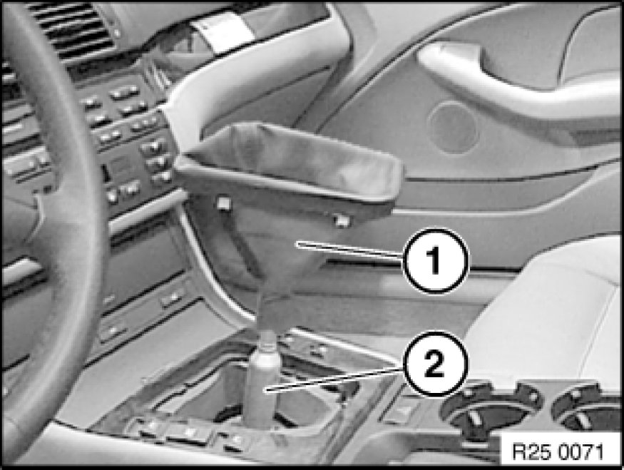
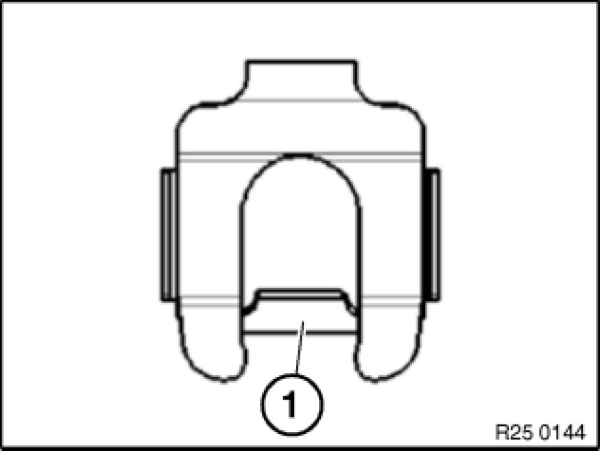
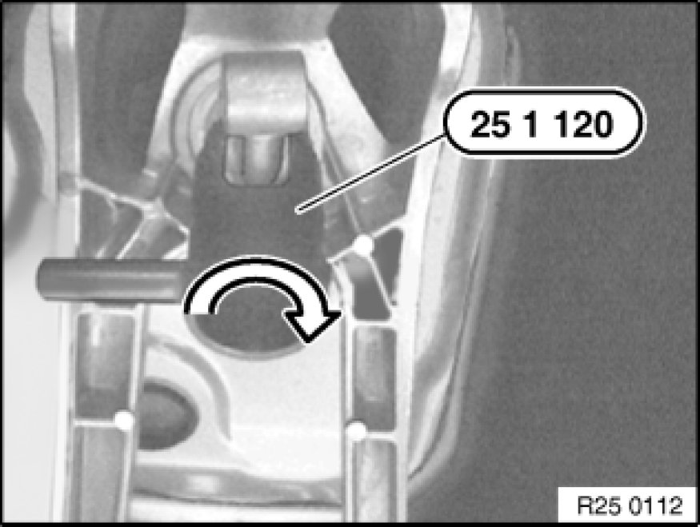

Removing and Installing Shift Lever
25 11 000 - Removing and installing shift lever

Special tools required:
- 25 1 120 Tools and Equipment

Necessary preliminary tasks:
- Remove complete exhaust system Service and Repair.
- Remove heat shield.
- Remove transmission cross-member Replacing Rubber Mount for Transmission Mounting.
Release screws.
Tightening torque 26 11 6AZ [1][2]Drive/Propeller Shaft.

Note:
Lower transmission.
Important!
Risk of damage:
Engine must not rest against bulkhead.

Detach knob with a firm tug.
Note:
Do not turn knob when detaching as this will shear off the turning lock in the knob.
Installation:
Fit knob on shift lever, align and press on until it snaps noticeably into place.
Note:
Illustration shows E46.
Press installation frame of rubber gaiter (1) together a little and remove rubber gaiter (1) from center console.

Installation:
Feed gaiter (1) downwards and fit on shift lever (2).
Pull rubber gaiter (1) over selector lever and insert in center console.
Installation:
Push rubber gaiter (1) down until groove (2) is fully exposed.
Remove soundproofing (1).

Lever out fixture (1) in direction of arrow.
Remove shims (3).
Pull selector rod (2) in direction of arrow.
Installation:
Grease shift rod pin.
Grease, refer to BMW Service Operating Fluids.
Make sure shims (3) are in correct position.

Important!
New retaining clips fitted as from 04.08.
Retaining clip must interlock captively with retaining web (1) behind shift rod pin.

Insert special tool 25 1 120 Tools and Equipment in mounting and turn 90° counterclockwise.
Press mount upwards out of shift arm.
Remove rubber gaiter from body cutout and lift out with selector lever.

Installation:
Insert rubber gaiter with arrow in direction of travel towards front.
Installation:
Grease selector lever ball.
Grease, refer to BMW Service Operating Fluids.
Install selector lever in selector arm.
Align mount:
- Arrows on mount in longitudinal axis of vehicle.
- Retaining lugs of mount, transverse to direction of travel.
Installation:
Press mount in area of retaining lugs into selector arm until it audibly snaps into place.
Installation:
Pull inner rubber gaiter over bowl on selector arm and press outer rubber gaiter into body cutout.